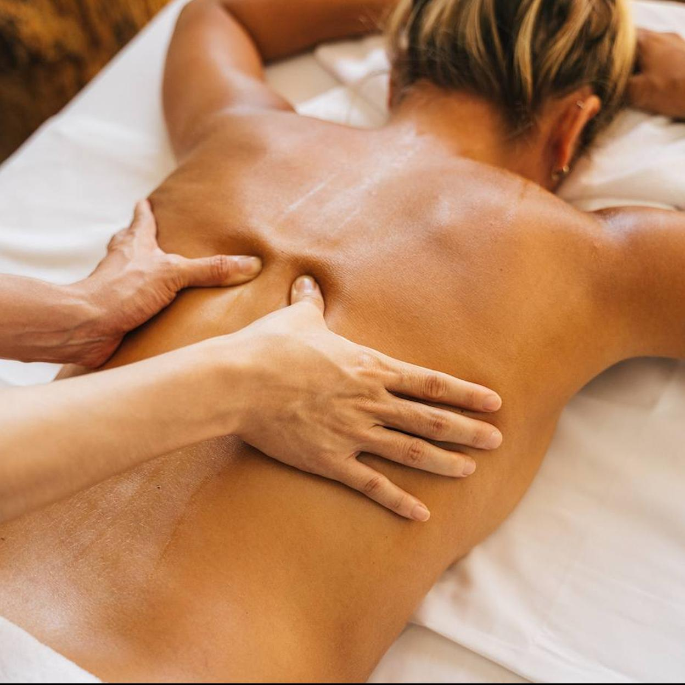

Masaje Relajante Tradicional
Técnica suave y fluida diseñada para reducir los niveles de estrés, mejorar la circulación y brindar una sensación total de descanso y paz mental.
Agendar por WhatsAppRelajación, salud y bienestar directo a la comodidad de tu hogar
Elige la variante de masaje que mejor se adapte a tus necesidades de descanso o alivio muscular.
Técnica suave y fluida diseñada para reducir los niveles de estrés, mejorar la circulación y brindar una sensación total de descanso y paz mental.
Agendar por WhatsApp
Enfocado en aliviar nudos y tensiones musculares acumuladas en espalda, cuello y hombros. Ideal para fatiga laboral o posturas prolongadas.
Agendar por WhatsAppLa combinación perfecta entre liberación de tensión muscular y relajación profunda acompañada de aceites esenciales para revitalizar el cuerpo.
Agendar por WhatsApp